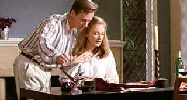

| Wedding Party/C,C |
| Image/1997/91/ANA 1.77 |
Freshman Aussie director Cheri Nowlan examines male/female relationships with an inconsistent flavor in The Wedding Party. Originally titled Thank God He Met Lizzie, the new title is a stinker and it’s very misleading. No comment on the original title is necessary. Nowlan seems unsure of what direction or tone to take. The film explores thirty-something bachelor Guy Jamieson's two most significant relationships leading up to and including his wedding party to Lizzie, a doctor, Guy's dream girl. Many of the scenes do take place at the wedding party, where circumstances lead him to recall varied aspects of his tempestuous relationship with the unconventional Jenny.
 |
| A tempest in a teapot. ©Image |
The film is cut aggressively between the two relationships. Personally,
I would have enjoyed a lot more Lizzie and less Jenny, though there is one Christmas tree
decorating scene in the buff that plays very well. There are interesting motifs running through the
film. Looking at life retrospectively often presents a different picture. The wedding humor is old,
unimaginative and boring.
Richard Roxsburgh plays the pivotal role of Guy with little panache, emphasized
by his character's stuttering uncertainty. Frances O'Connor, most recently the Mom in Steven
Spielberg's A.I., is a dynamic screen presence as Jenny, but even her charisma fails to
ignite the story. Cate Blanchett has the unenviable task of bringing Lizzie to life, and while she
finds lots of humor in the character, her story is given the short shrift.
To make matters more difficult, I had trouble understanding a lot of the
Australian accented dialogue. It was probably exacerbated by a poor sound track. The image was even
less pleasing. Lots of soft, indistinct focus and a washed out color palette. Some of it was
probably artistic intention, but for me it played mostly as pretension
Includes good making of material featuring interviews with filmmaking
principals. Dolby Digital 5:1 sound is set at too high a level. Even cut back, the sound is rather
distorted.

Not
One Less
 In a remote
Chinese village a 13 year old Chinese girl takes determination to the limits. From master filmmaker
Zhang Yimou.
In a remote
Chinese village a 13 year old Chinese girl takes determination to the limits. From master filmmaker
Zhang Yimou.


The Academy of Motion Picture Arts
Sciences and has a soft spot reserved for peers taking on the battle of the bottle. Click on the
bottle to learn more about the magic of Oscar® Formula One.

 Have you visited Home Theater
Talk lately? One of the friendliest places on the Net for Home Theater and DVD discussion, you
can get help for installation problems or simply share your opinions with other Vidiots.
Have you visited Home Theater
Talk lately? One of the friendliest places on the Net for Home Theater and DVD discussion, you
can get help for installation problems or simply share your opinions with other Vidiots.

Now a major independent DVD distributor, Image has parlayed its laser disc business
to success. Great DVD release calendar info.

The home of John Tisch's invaluable Poster Price Almanac. Every serious poster collector
uses the Almanac as a reference.

Images is a non-commercial Web site created for everyone who enjoys movies and popular culture.
Images is published quarterly; however, new reviews will appear each week, so check back often.